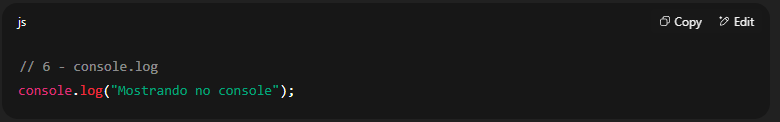

1 - let, const, var
O que faz: Server para guardar dados.

O que faz: Server para guardar dados.
Função é um bloco de código que você cria
para executar uma tarefa específica sempre
que precisar, só chamando o nome dela.
O que faz: Responder a ações do usuário,
como cliques.
O que faz: Tomar decisões no código.

O que faz: For: repete um código um número
definido de vezes;
While: repete enquanto uma condição for verdadeira,
sem limite definido.

O que faz: Mostrar mensagens para depuração.
O que faz: Mostra uma mensagem em uma janela modal
(pop-up) que o usuário precisa fechar para continuar.
Serve para avisos rápidos.
O que faz: Exibe uma janela modal
com duas opções: OK ou Cancelar. retorna
true se clicar OK, ou false se cancelar.
O que faz: Uma forma de comparar uma variável
com vários valores diferentes, evitando muitos if/else if.
break é obrigatório para não executar todos os casos.
O que faz: Executa uma função uma única vez após
um certo tempo (milissegundos).
O que faz: Executa uma função repetidamente em
intervalos definidos (milissegundos).